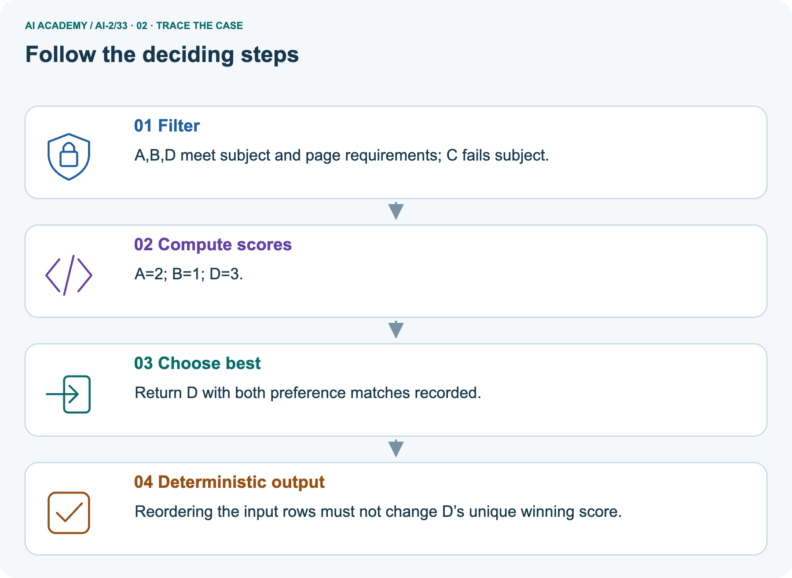
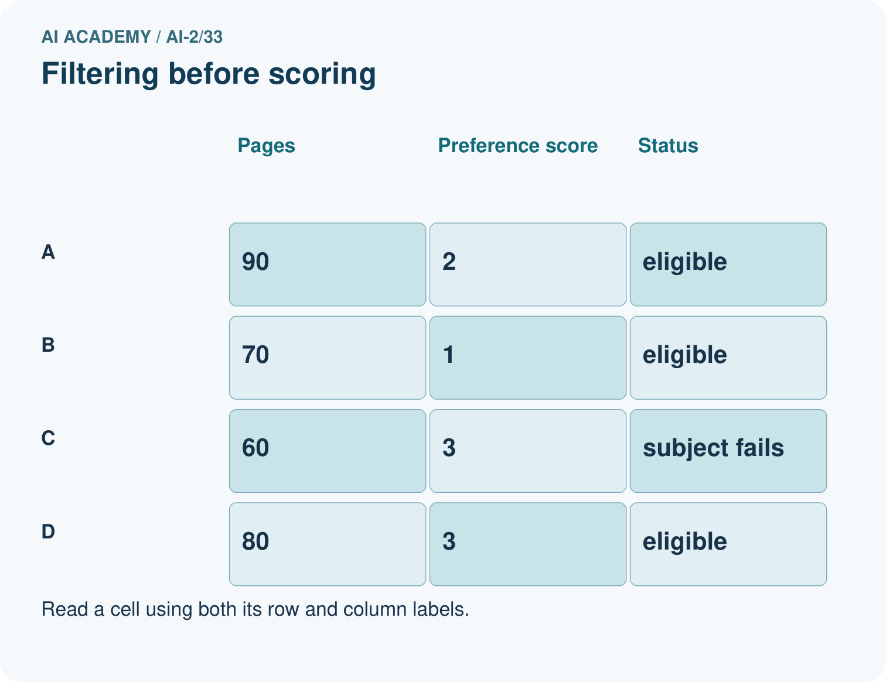
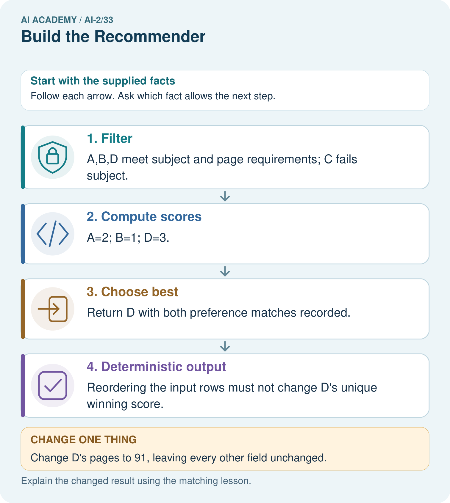
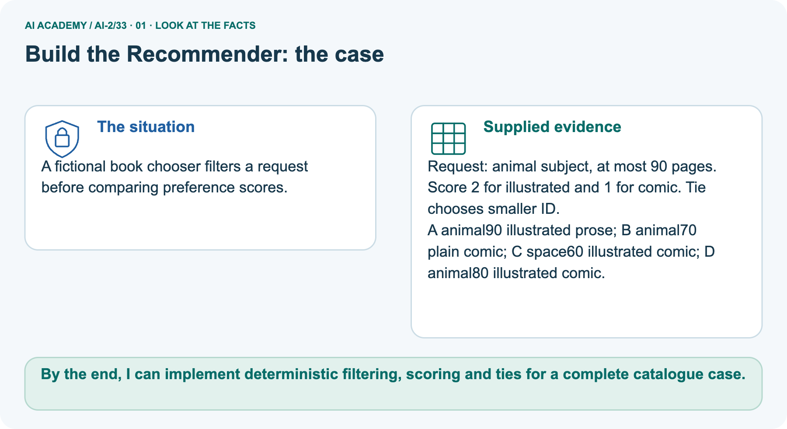
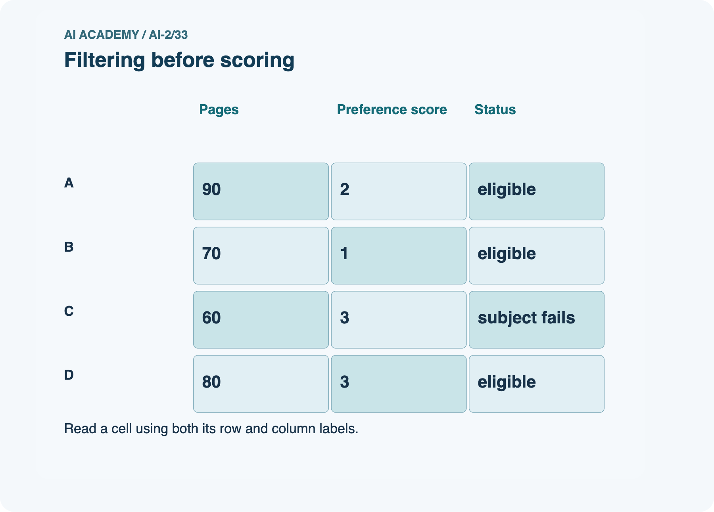
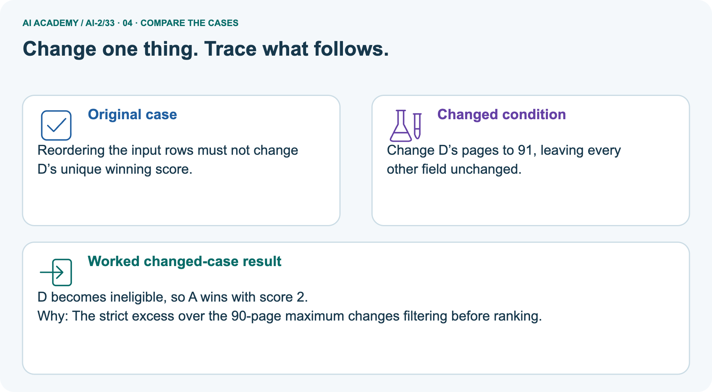
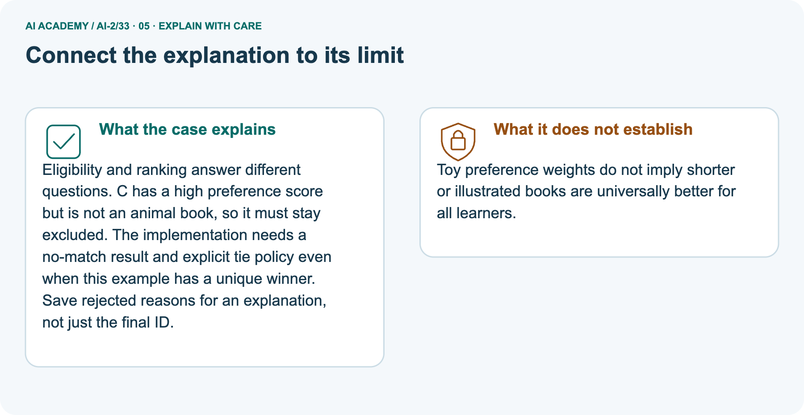
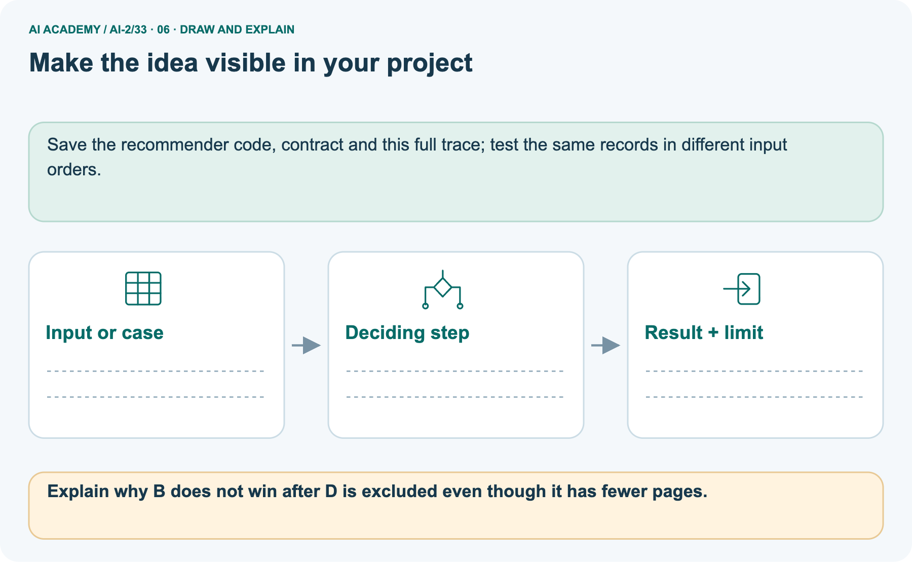

AI Academy · Level 2 · Grade 7 · Week 33 · Teacher guide
Build the Recommender
Learn to understand, design, build, test and explain AI systems responsibly.
Project: Transparent Book Recommender
THE CONNECTED WEEK
Teach the code together with its assumptions and tests.
Run all supplied code, keep policies separate and assess the selected mystery-book case before feedback.
Keep one habit: Require rejected versus ineligible counts and a tie explanation tied to the current task.
Main lesson · Section 1
Prepare the main lesson and its retained extension
Use fictional records and schedule separate extension time.
Goal and preparation
Primary target: Implement a deterministic recommender
Teach Week 24 as a two-session investigation using fictional data. Build a fictional activity recommender using last week's score. Require duration at most a supplied limit. On a tie choose the alphabetically first name.
This makes the outcome reproducible rather than dependent on input order. Assume unique names and validated numeric fields. Assess the three stated outcomes through the independent task, not by copying the worked result.
By the end, I can implement deterministic filtering, scoring and ties for a complete catalogue case.
Use the supplied scenario, student illustrations and blank paper. For numeric work, offer counters or a calculator after learners show the setup. Fictional records are supplied; personal data and paid accounts are unnecessary.
Main plan
| Session | Sequence and minutes | Resources |
|---|---|---|
| Session 1 · Understand · 45 min | 0–7: recall and prerequisite; 7–15: inspect the concrete case and predict; 15–30: teacher models the worked trace; 30–40: learners explain a step using the text and visual; 40–45: check the core idea. | Use Your mission, Notice the evidence, See how it works, Compare the cases, Words that unlock the idea and Follow a worked example; record the brief recall in the workbook. |
| Session 2 · Practise · 45 min | 0–5: retrieve the procedure; 5–15: W2 completion practice; 15–23: explain and check with a partner; 23–30: each learner answers the misconception check; 30–40: targeted reteaching or a harder variation; 40–45: prepare the investigation. | Use Find and repair a mistake, Practise together, Run the investigation and Build your understanding; use the matching workbook W2 and misconception check. |
| Session 3 · Investigate and transfer · 45 min | 0–5: retrieve the decision rule; 5–20: investigate or trace; 20–30: start the independent case; 30–38: connect the project; 38–43: act on feedback; 43–45: plan the return check. | Use Run the investigation, Connect your project, Show what you know, Study a complete case and Try a new case independently. Allow extra time for the full task set. Use a coding lab only when this week actually provides one; Your lesson route is the planning section. |
This is a starting allocation of 135 minutes, not a validated duration. Preserve all named topics. Schedule extra time for connected examples, the full investigation, independent cases and project building.
Repeated copies of a case share one recorded attempt; they are not new evidence.
Retrieval and readiness
Without opening the old lesson, explain one key idea from Project Problem and Success Test. Give an example and a mistake that the idea helps you avoid.
Look for: Define a small application purpose
Reference example, not the only acceptable wording: Suggest a suitable eligible activity for a teacher-supervised session; the teacher reviews and decides.
Without opening the old lesson, explain one key idea from Agents and Tools. Give an example and a mistake that the idea helps you avoid.
Look for: Explain the mechanism and terminology of state machines for bounded agents
Reference example, not the only acceptable wording: Teacher explanation: A bounded agent uses explicit states and finite action limits. A state machine makes invalid transitions visible.
States are ready, looking_up, review, done. ready may start lookup; lookup may finish done or request review; review may finish done after authorised evidence. done is terminal. Maximum two lookup attempts.
Without opening the old lesson, explain one key idea from Predictive vs Generative. Give an example and a mistake that the idea helps you avoid.
Look for: Distinguish discriminative prediction from generation by inspecting the requested output
Reference example, not the only acceptable wording: Teacher explanation: Message labels are discriminative prediction; continuing a sequence is generation; record lookup is retrieval rather than learned generation by itself.
One application can route a request, retrieve evidence and generate a response.
No. Filter by the hard constraint before ranking.
Materials and extension planning
Python 3 editor with a fresh local practice file
Paper trace table and the student workbook
Fictional input records from this lesson; no real student identifiers
Apply the connected idea: Building the data pipeline
Teach Week 32 as a two-session investigation using fictional data. Build the validation stage of the planned chooser first. A valid record has nonempty text name, integer minutes 0 through 60 and integer fun and learning ratings 0 through 5. The batch stage must separately check name uniqueness. Only accepted records may reach the selection function in this week’s lesson. Assess the three stated outcomes through the independent task, not by copying the worked result.
Readiness answer
Validate, filter eligibility, calculate scores, resolve ties, then report with limits.
Python 3 editor with a fresh local practice file
Paper trace table and the student workbook
Fictional input records from this lesson; no real student identifiers
Earlier wording, alternatives and picture transcripts
Teach the learning cycle
Case exposure check: this source example appears in ai-2/24, ai-2/33. Reuse a familiar case for recall or modelling; verify that the case used to assess transfer has not already received feedback.
Retrieval answer guidance
Project Problem and Success Test
Agents and Tools
Predictive vs Generative
Use the student module and workbook section with this exact week title. The worked case, independent question and answers below form one aligned lesson sequence.
What the learner must demonstrate
Catalogue: A mystery/90/illustrated, B mystery/140/not illustrated, C science/80/illustrated. Request mystery, maximum 100 pages. Rank with 2 genre points and 1 illustration point after filtering.
Show why other books are excluded.
Concept to explain
A transparent baseline makes later improvements understandable.
| Term | Meaning |
|---|---|
| baseline | A simple reference method used to judge whether a more complex method adds value. |
| candidate | An item or proposed answer being considered before a final selection. |
| weighted total | A sum formed after multiplying each contribution by its assigned weight. |
| explanation | An account connecting a result to the mechanism, calculation or evidence that supports it. |
Prepare the class
This compact option is not the full-week schedule. Use the main teaching cycle and allow extra sessions for the investigation, independent work and project.
Allow 80 minutes: recall 8; explanation 12; worked demonstration 15; guided practice 20; independent assessment 15; project and reflection 10. Extend the lab into a second session when needed.
Preparation for the connected explanation
Readiness answer
End goal for the pictorial case
This added worked case illustrates the week’s main idea. Retain all original and connected topics; schedule its practice within the teaching cycle.
Main lesson · Section 2
Model the activity state trace and separate book ranking
Keep schemas, scores and tie rules labelled.
State main assumptions
Build a fictional activity recommender using last week's score. Require duration at most a supplied limit. On a tie choose the alphabetically first name.
This makes the outcome reproducible rather than dependent on input order. Assume unique names and validated numeric fields.
Run and trace the activity selector
def recommend(items, limit):
best = None
best_score = None
for item in items:
if item["minutes"] <= limit:
score = 2 * item["fun"] + item["learning"]
if (best is None or score > best_score
or (score == best_score and item["name"] < best)):
best = item["name"]
best_score = score
return best
items = [{"name": "B", "fun": 3, "learning": 2, "minutes": 10},
{"name": "A", "fun": 2, "learning": 4, "minutes": 9}]
print(recommend(items, 10))The function prints nothing; the caller prints A. best starts as None to mean no eligible option found. Python short-circuits or: when best is None, later comparisons in that condition need not run.
After selecting an item, best_score is numeric. An empty list or no eligible item returns None.
Read the separate animal-book dataset
A fictional book chooser filters a request before comparing preference scores.
Request: animal subject, at most 90 pages. Score 2 for illustrated and 1 for comic. Tie chooses smaller ID.
A animal90 illustrated prose; B animal70 plain comic; C space60 illustrated comic; D animal80 illustrated comic.
Trace the book ranking and exclusions



Read the picture one step at a time
Eligibility and ranking answer different questions. C has a high preference score but is not an animal book, so it must stay excluded.
The implementation needs a no-match result and explicit tie policy even when this example has a unique winner. Save rejected reasons for an explanation, not just the final ID.
Predict the changed-D result
Change: Change D’s pages to 91, leaving every other field unchanged.
Prediction: D becomes ineligible, so A wins with score 2.
Reason: The strict excess over the 90-page maximum changes filtering before ranking.
Run the complete pictured book code
def choose_book(rows, subject, max_pages):
# Inputs are supplied, validated fictional rows with unique IDs.
eligible = [r for r in rows if r['subject'] == subject and r['pages'] <= max_pages]
ranked = sorted(eligible, key=lambda r: (-(2*int(r['illustrated']) + int(r['comic'])), r['id']))
return [(r['id'], 2*int(r['illustrated']) + int(r['comic'])) for r in ranked]
books = [dict(id='A',subject='animal',pages=90,illustrated=True,comic=False),
dict(id='B',subject='animal',pages=70,illustrated=False,comic=True),
dict(id='C',subject='space',pages=60,illustrated=True,comic=True),
dict(id='D',subject='animal',pages=80,illustrated=True,comic=True)]
print(choose_book(books, 'animal', 90))
changed = [dict(r, pages=91) if r['id']=='D' else dict(r) for r in books]
print(choose_book(changed, 'animal', 90))
print(choose_book(books, 'animal', 50))Explain the picture’s limits
Toy preference weights do not imply shorter or illustrated books are universally better for all learners.
Cover the result. Ask learners to name the inputs and predict the next step. Uncover one step, connect the icon to the actual procedure, and explain its evidence. Then change the supplied condition and compare.
The picture is a representation; it does not document execution of a real AI model.
Pipeline extension · Validate each row before selection
Build the validation stage of the planned chooser first. A valid record has nonempty text name, integer minutes 0 through 60 and integer fun and learning ratings 0 through 5. The batch stage must separately check name uniqueness. Only accepted records may reach the selection function in this week’s lesson.
def valid_item(row):
if type(row) is not dict:
return False
if type(row.get("name")) is not str or not row["name"]:
return False
for key, maximum in [("minutes", 60), ("fun", 5), ("learning", 5)]:
value = row.get(key)
if type(value) is not int or not 0 <= value <= maximum:
return False
return True
print(valid_item({"name": "A", "minutes": 20, "fun": 4, "learning": 2}))
print(valid_item({"name": "B", "minutes": 10, "fun": "4", "learning": 2}))The worked calls print True then False. Short-circuit checks keep absent or wrongly typed fields away from later operations.
This Boolean helper does not explain the reason; add reason codes in the reporting stage or use a validation result record. Do not describe a range failure as a no-match outcome.
The first passes. Replacing minutes with 61 fails the range. Exit: No. The batch uniqueness contract fails. Exclude every occurrence of each duplicated name and report the reasons for correction, following the frozen Week32 policy.
Earlier wording, alternatives and picture transcripts
Explain the mechanism
Input → Process → Output
Trace the information. At each stage, ask what changed and how you could test it.
Which stage could fail even when the other two are correct? Explain:
Predict first. Then check each step. A correct answer without visible reasoning is incomplete evidence.
1. Weights: genre=3, difficulty=2, length=1.
2. Compute every candidate’s terms and total.
3. Filter hard constraints, sort remaining totals high to low.
4. Output top choice, score breakdown, one limitation, and a tie rule.
Recalculate, retrace, or restate the reasoning in your own representation:
CHECK Did the evidence answer the exact question? Did the total, path, or source record stay consistent?
Concrete teaching case
A has flags (1,1), B=(1,0), C=(0,1); score=2g+l.
Compute the winner and evidence to display.
Exact explanation to model
A wins at 3; B=2; C=1. Show flags, formula, scores and explanation; declare tie policy.
Explain the added worked example
Key terms
| Term | Meaning |
|---|---|
| Recommender | A procedure that suggests options using a stated policy |
| Tie | Two options have the same comparison score |
| Deterministic | The same inputs and rules produce the same result |
| Explanation | Evidence describing how a result was obtained |
Apply the connected idea: Building the data pipeline
Model the reasoning aloud
Use the complete worked example below before asking learners to complete W2. Reveal a small part, invite a prediction, then explain the deciding step.
These teacher notes contain solutions; do not reveal the independent case answer during modelling.
| Thinking move | Teacher prompt |
|---|---|
| Plan | What is given? What is the question? Which procedure fits these facts? |
| Do | Point to each input and intermediate step in the worked trace. Name the rule that allows the next step. |
| Check | Does the output answer the question? Which assumption or limitation prevents a larger claim? |
Use the diagram and verbal explanation together. Ask learners to match a sentence to a specific visual step; do not assign learners fixed visual or auditory learning styles.
A pictorial worked case: Build the Recommender
The facts we will use






Why this result follows
What this example does not establish
Change one thing in the pictured case
Ask while showing the picture
Main lesson · Section 3
Guide the main explanation, then fade support
Collect each learner’s reasoning before revealing a key.
Main completion question and key
Completion task: State recommend([], 10) and the worked items with limit 8.
Teacher check: Both return None; the caller should display no eligible option.
Start by identifying the given inputs together. Leave the intermediate steps blank. If needed, model one step, then withdraw that help on the next step. Move to a full trace only when the partial trace is understood.
For partners, alternate explainer and checker; collect a response from every learner before discussion.
Main individual check
Use the worked case for Implementing a recommender. Proposed explanation: “A successful run proves the conclusion”. Decide whether this explanation is supported.
Point to the step or supplied fact that decides; explain your repair if needed.
Expected correction: The recommendation follows a written scoring policy. It does not learn preferences, prove learning benefit or authorize an action.
Display the chosen rule and let a person review whether an option is suitable.
Collect explanations, not only yes/no votes. If a misunderstanding is common, re-model the relevant step for the class.
If it affects a few learners, give a short targeted group explanation while others solve a more demanding variation.
Pictorial question and changed case
Explain why B does not win after D is excluded even though it has fewer pages.
Page count is an eligibility limit, not a ranking preference here. A scores 2 and B scores 1.
Changed-case reasoning: D becomes ineligible, so A wins with score 2. The strict excess over the 90-page maximum changes filtering before ranking.
Collect each learner’s explanation before discussion. Use the first missing connection between input, deciding step and result to choose support. This question is worked-case practice, not fresh mastery evidence.
Keep learners explaining
Ask: Which facts are given, and which would we have to assume? Learners mark relevant details before discussing answers.
Say: Predict first. Show the rule, information path or calculation that would produce the result. A correct guess is not yet an explanation.
In pairs, one learner solves while the other checks evidence; exchange roles. Remove the worked answer before independent assessment.
Extension teaching cycle
Target: Separate validation selection and reporting
Reserve further sessions for this topic; the 135-minute primary plan does not absorb all added content.
Completion practice: What does valid_item return if learning is absent?
Teacher check: False: get returns None and the exact integer check fails.
Individual check: For Building the data pipeline, use its worked case to evaluate this proposed explanation: “A successful run proves the conclusion”. Explain the deciding step.
Expected correction: Each stage should have a clear input and output contract. A program can be correct at one stage but wrong at their connection, such as passing rejected rows into selection.
Keep acceptance and rejection counts in the report.
Apply the same support, independent transfer and delayed-review decisions to the named connected-topic workbook tasks.
Earlier wording, alternatives and picture transcripts
Demonstrate and guide practice
Board sequence
Write the given facts: A has flags (1,1), B=(1,0), C=(0,1); score=2g+l.
Write the question to explain: Compute the winner and evidence to display.
Reveal after predictions: A wins at 3; B=2; C=1. Show flags, formula, scores and explanation; declare tie policy.
Use the earlier transfer question as optional practice. Reserve Rank the new mystery catalogue independently for the first independent attempt before hints or feedback.
Classroom dialogue
Reveal reasoning one step at a time. Explain why a tempting alternative fails. Write units and denominators for arithmetic, trace conditions for decisions, and identify supporting sources for claims.
Model these guided questions
Reversing still returns A. Limit 8 leaves no eligible item and returns None. Exit: X meets the 12-minute limit and ties for highest eligible score 9; the alphabetical tie rule selects X.
Case-specific teaching sequence
| Stage | Teacher action |
|---|---|
| Session 1 start to 7 minutes | Retrieve the prerequisite and explain the purpose in the opening section. |
| 7 to 20 minutes | Read the worked example and diagram; ask learners to trace each step aloud. |
| 20 to 33 minutes | Complete W1 and W2, then compare predictions with observed results. |
| 33 to 45 minutes | Collect the guided prediction before running; discuss a mismatch and its cause. |
| Session 2 start to 8 minutes | Retrieve the main rule without showing the previous answer. |
| 8 to 20 minutes | Use W3 to diagnose and repair the stated failure; rerun an earlier case. |
| 20 to 35 minutes | Collect W4 independently, including code or plan, predictions and explanations, before hints. |
| 35 to 45 minutes | Discuss W5 and the exit; use the fresh retry when support was needed. |
Teach the connected idea
| Stage | Teacher action |
|---|---|
| Session 1 start to 7 minutes | Retrieve the prerequisite and explain the purpose in the opening section. |
| 7 to 20 minutes | Read the worked example and diagram; ask learners to trace each step aloud. |
| 20 to 33 minutes | Complete W1 and W2, then compare predictions with observed results. |
| 33 to 45 minutes | Collect the guided prediction before running; discuss a mismatch and its cause. |
| Session 2 start to 8 minutes | Retrieve the main rule without showing the previous answer. |
| 8 to 20 minutes | Use W3 to diagnose and repair the stated failure; rerun an earlier case. |
| 20 to 35 minutes | Collect W4 independently, including code or plan, predictions and explanations, before hints. |
| 35 to 45 minutes | Discuss W5 and the exit; use the fresh retry when support was needed. |
Reduce help deliberately
Individual reasoning check
Connected teaching cycle: Building the data pipeline
Pictorial practice question
Reasoned teacher answer
Main lesson · Section 4
Run the supplied main investigation
Keep the selected independent task out of shared practice.
Supplied records and answer guidance
Activity example: A and B score 8; A wins by name in either order; limit 8 returns None. Complete pipeline: A, B and C validate; D fails the fun type; B is valid but too long; A and C tie at 8 and A wins. Reversing input preserves ranking; zero limit gives no match; Boolean True is an invalid request.
Reject every duplicated A occurrence, leaving C eligible. Separate book picture: A scores 2, B 1, D 3; C fails subject. Changing D to 91 pages selects A. Independent mystery task: D fails length, F fails subject; E scores 3, G and H score 5; H wins with 90 rather than 95 pages. X/Y/Z remains additional activity practice.
Predict, investigate and record
Predict → Test → Record → Explain
Keep expected and actual results separate. Surprises are useful data when recorded honestly.
Run the supplied complete activity pipeline and pictured book ranking on fictional local records. Hand-check scores, reverse order, test duplicates and invalid fields, and compare a valid no-match result with an invalid request. No live learner profile is required.
What did the hardest test teach you that the normal test did not?
Keep the evidence
| Record | What to capture |
|---|---|
| Input or evidence | Exact data, instruction or claim |
| Expected result | Answer or safe fallback declared before the run |
| Observed result | Actual result, including errors |
| Explanation | Rule, calculation or evidence explaining the outcome |
| Next test | One justified change and a new prediction |
Main misconceptions
A successful run proves the conclusion: The recommendation follows a written scoring policy. It does not learn preferences, prove learning benefit or authorize an action.
Display the chosen rule and let a person review whether an option is suitable.
Matching the example is enough: Require the new W4 case, explicit predictions and an explanation. Fresh retry: B (2,4,8), C (3,2,8), A (5,5,9), limit 8. B/C tie at 8; B wins. Limit 7 returns None.
A convenient shortcut preserves meaning: Updating best on score >= best_score makes the last tied item win, so reordering can change results. Use the explicit name comparison for ties.
Test both orders and a no-match case after the repair.
Choose support
| What the response shows | Next teaching action |
|---|---|
| Missing or misread facts | Read the case aloud, mark supplied versus unknown facts, and let the learner restate it. |
| Wrong procedure | Return to the deciding step in the worked case. Contrast it with the proposed incorrect explanation. |
| Arithmetic or implementation error | Trace intermediate values or lines; preserve the first mismatch and retry that step. |
| Correct result without a reason | Ask for a trace and a changed case before marking independent understanding. |
| An unsupported wider claim | Ask which supplied evidence supports the claim and which further observation would be needed. |
Offer an oral explanation, drawing, enlarged visual or fewer examples when that removes a reading/writing barrier. Keep the same reasoning goal.
Stretch secure learners by changing a boundary or assumption and asking them to defend the effect, not simply by assigning more of the same questions.
Extension misconceptions
A successful run proves the conclusion: Each stage should have a clear input and output contract. A program can be correct at one stage but wrong at their connection, such as passing rejected rows into selection.
Keep acceptance and rejection counts in the report.
Matching the example is enough: Require the new W4 case, explicit predictions and an explanation. Fresh retry: X (minutes 9, fun 2, learning 3), Y (10,3,2), Z (11,6,1), limit 10.
Accept X/Y, reject Z rating; select Y score 8 versus X 7.
A convenient shortcut preserves meaning: Calling the selector on raw data can crash or produce a result from invalid ratings. Route data through validation first. Duplicate names require a batch check even when each row individually passes; exclude every occurrence of each duplicated name, retain reasons and review the source instead of arbitrarily keeping one.
Earlier wording, alternatives and picture transcripts
Run the weekly evidence lab
Words You Can Use to Reason
A definition matters when you can recognize the idea, use it, and contrast it with a near-miss.
Make the lab runnable
Use the supplied main investigation for shared practice. Reserve Rank the new mystery catalogue independently for the individual first attempt. The named extension has separate tasks and feedback.
Diagnose and reteach
For guessing, return to given facts and request a trace. For vocabulary without application, use one example and one non-example. For arithmetic errors, check the setup before the calculation.
Finish with a different uncoached case before recording mastery.
Address these additional misconceptions
Check these misconceptions
Match the support to the first error
Main lesson · Section 5
Assess the selected main independent task
Reveal its key after the first attempt; extension tasks have their own keys.
Selected independent question and key
Selected case: Request: mystery, at most 100 pages. Catalogue: D mystery110 illustrated; E mystery80 plain; F science80 illustrated; G mystery95 illustrated; H mystery90 illustrated.
Filter first; score 3 for mystery plus 2 for illustrations; break ties by fewer pages.
D fails length and F fails genre. E scores3, G and H score5. H wins the tie with 90 versus95 pages. Filtering is separate from scoring; this written preference rule is not proof of a trained model.
Judge reasoning and limits
| Dimension | Evidence required |
|---|---|
| Explanation | Names the applicable idea or procedure and ties it to the supplied facts. |
| Trace and result | Preserves the given inputs and shows the relevant intermediate steps; distinguishes a prediction from an observed execution. |
| Limits | States the assumptions, missing evidence or conditions under which the result would change. |
Record each dimension as not yet, with support, or independent. Accept a valid alternative procedure with a defensible trace.
Do not penalise an honestly recorded model failure if the learner correctly explains its evidence and limits.
Give one repair action
Name the earliest unsupported step and give one action to repair it. Have the learner make that repair now and explain why. Then assess the relevant skill on a fresh, fully specified case.
Confirm it was not previously practised with feedback; solve and check the new case before assigning it. A follow-up design prompt is a starting brief, not automatically an equivalent test.
W1 Trace selection
Why does A win the worked example even though B is processed first?
Both score 8 and qualify; A is alphabetically first under the tie rule.
W2 Handle no match
State recommend([], 10) and the worked items with limit 8.
Both return None; the caller should display no eligible option.
For the empty list, the loop has no iterations, so best stays None. With the worked durations 10 and 9 under a limit of 8, neither item passes the eligibility check, so best again stays None.
The caller must turn this result into a clear no-eligible-option message; it must not treat None as an activity name.
W3 Repair order dependence
A tied selection changes after reversing input order. Identify the likely missing policy and test.
An explicit deterministic tie rule is missing or incorrect. Apply alphabetical name order and rerun both orders.
W5 Explain the result
Write a one-sentence explanation of X winning without calling it objectively best.
X meets the 12-minute limit and ties for highest eligible score 9; the alphabetical tie rule selects X.
Extension questions and keys
Building the data pipeline — W1 Trace a validation
Explain why a row with fun "4" fails while fun 4 can pass.
The first is text; the schema requires an exact integer rating from 0 to 5.
Building the data pipeline — W2 Check missing fields
What does valid_item return if learning is absent?
False: get returns None and the exact integer check fails.
When learning is absent, row.get("learning") returns None. The condition type(value) is not int is true, so the helper returns False before doing the range comparison.
This is a schema rejection; it is different from a valid item that later exceeds the selection time limit.
Building the data pipeline — W3 Repair the connection
A program validates rows but still sends the original raw list to recommend. What should change?
Pass only the accepted, uniqueness-checked list. Preserve rejection information separately for reporting.
Building the data pipeline — W4 Build independently
Combine validation and the selector in this week’s lesson for A (minutes 10, fun 3, learning 2), B (12,4,1), and C (8,"5",5), limit 10. State accepted rows, rejected row, selection and explanation.
A and B validate; C fails fun type. B exceeds the limit. A wins with score 8. Report 2 accepted of 3, one rejection and one eligible item. Verify unique names.
Building the data pipeline — W5 Handle duplicates
Two valid rows have the same name but different ratings. Should individual validation alone permit selection?
No. The batch uniqueness contract fails. Exclude every occurrence of each duplicated name and report the reasons for correction, following the frozen Week32 policy.
Earlier wording, alternatives and picture transcripts
Assess and explain the answers
Worked case answer
A wins at 3; B=2; C=1. Show flags, formula, scores and explanation; declare tie policy.
Additional transfer practice
A reader requests space and at most 60 pages. Book A is space, 90 pages; B is animals, 40 pages. What should the prototype return if both conditions are required?
Reasoned practice answer
Neither matches both conditions. Return no exact match and ask whether to relax a preference; do not present A or B as a full match.
What counts as evidence
| Criterion | 0 points | 1 point | 2 points |
|---|---|---|---|
| Result | Incorrect or absent | Partly correct | Correct with necessary conditions |
| Reasoning | No supporting trace | Some steps | Clear mechanism, calculation or source support |
| Limit | Overclaims certainty | Vague limitation | Relevant uncertainty or missing fact |
| Transfer | Copies without adapting | Adapts with prompts | Solves a changed case independently |
Use 6/8 as a classroom checkpoint, with 2 required for both Result and Reasoning. This is a proposed teaching rule, not a validated certification threshold.
Do not count a coached answer as independent mastery; correct unsafe or unsupported claims regardless of total.
Feedback
Ask the learner to find the evidence that challenges this claim: “The system must recommend something even when constraints fail.” Keep the first attempt and an uncoached retry separate.
Original transfer answer
Only A meets genre and length constraints; its score is 3. B exceeds the page limit and C fails genre. Do not claim A beat eligible competitors when none existed. Include no-match and missing-field handling in the prototype.
Explanations for the additional workbook examples
W1 Trace selection
W2 Handle no match
W3 Repair order dependence
W4 Implement independently
Use the function with X (fun 4, learning 1, minutes 12), Y (3,3,10), Z (5,5,13), limit 12. Predict the winner, reverse the list and retest. Also test limit 9.
X and Y score 9; Z is excluded. X wins alphabetically in either order. Limit 9 returns None.
W5 Explain the result
Assess independent transfer
Selected case answer
Feedback that the learner uses
Main lesson · Section 6
Connect, support and return
Keep main and extension assessment evidence distinguishable.
Project record
Keep the decision, input, result, explanation and remaining limitation in the project evidence record. Retrieve this record next week rather than restarting the project.
Save the recommender code, contract and this full trace; test the same records in different input orders.
Main support and fresh assessment
Trace best and best_score row by row. Extension: return a record with name, score and reason while retaining the same selection policy.
Selected independent mystery task: D fails length, F fails subject; E scores3 and G/H5; H wins the shorter-page tie90<95. Require the filtering and score trace. Fresh book retry: requestanimal,max80pages; score2illustrated+1comic,tieID; J animal80 plaincomic, K animal70 illustratedprose, L space60 illustratedcomic. Expected J1,K2;Lexcluded;Kselected. Collect before feedback and record support used. The older X/Y/Z activity task remains additional practice with its own key.
Delayed return
Suggested return points in this level: ai-2/34, ai-2/36. Use actual classroom dates, adjusting for holidays and gaps. One, three and six teaching weeks are scheduling choices, not a claimed optimal spacing.
At a delayed check, ask for the idea from memory and a changed application. Compare with the earlier independent response and record support used.
For a new level, revisit the previous capstone before checking the new prerequisites.
| Record | Teacher evidence |
|---|---|
| Learner code and date | |
| Concept and case used; prior exposure | |
| Explanation / trace / limits | |
| Support and first repair | |
| Changed case and delayed outcome | |
| Next teaching action |
Use the evidence to choose reteaching or the next step. A completed page, confidence rating or attractive project does not by itself demonstrate understanding.
Bridge to next week
Ask for one decision the learner can now justify and one situation requiring more evidence or human review. Confidence ratings are separate from correct independent performance.
Next: Week 34: Test Diverse Users. Retrieve today’s evidence and identify what carries forward and what is new.
Next is Week34: Test Diverse Users. Reuse the implemented baseline, contract, complete traces and expected outputs when auditing cases and failure conditions.
Extension support and reassessment
Connect paper stage cards with input/output labels. Extension: return specific reasons for missing, type and range errors without exposing personal data.
Independent W4 evidence: A and B validate; C fails fun type. B exceeds the limit. A wins with score 8. Report 2 accepted of 3, one rejection and one eligible item. Verify unique names.
Record whether the learner needed no help, a hint or explanation. Fresh retry: X (minutes 9, fun 2, learning 3), Y (10,3,2), Z (11,6,1), limit 10. Accept X/Y, reject Z rating; select Y score 8 versus X 7.
Earlier wording, alternatives and picture transcripts
Connect and extend learning
Transparent Book Recommender
This is the complete baseline: inputs, scoring, filter, ranking, explanation, and abstain rule.
Support and stretch
Trace one record or condition at a time with counters and labelled columns. Stretch: introduce a tie, boundary or missing field and declare its handling policy before rerunning.
Exit reflection
Bridge to the next week
Support and fresh reassessment
Readiness and reassessment for Building the data pipeline
Plan the delayed return
Project evidence from this case
Reference bank and extra practice
Choose the reference that helps your next step.
Reference · Alternative teaching checklist
Reference · Section 7
Reference · Alternative teaching checklist
Use as a reminder alongside the main route.
Planning reference
Teaching target: Implement a deterministic recommender
Prepare the labelled worked-case picture, the matching workbook, fictional input cards and a place for individual responses. No paid AI account is required for the paper reasoning activities.
| Session | Plan | Resources |
|---|---|---|
| Session 1 · Understand · 45 min | 0–7: recall and prerequisite; 7–15: inspect the concrete case and predict; 15–30: teacher models the worked trace; 30–40: learners explain a step using the text and visual; 40–45: check the core idea. | Use Your mission, Notice the evidence, See how it works, Compare the cases, Words that unlock the idea and Follow a worked example; record the brief recall in the workbook. |
| Session 2 · Practise · 45 min | 0–5: retrieve the procedure; 5–15: W2 completion practice; 15–23: explain and check with a partner; 23–30: each learner answers the misconception check; 30–40: targeted reteaching or a harder variation; 40–45: prepare the investigation. | Use Find and repair a mistake, Practise together, Run the investigation and Build your understanding; use the matching workbook W2 and misconception check. |
| Session 3 · Investigate and transfer · 45 min | 0–5: retrieve the decision rule; 5–20: investigate or trace; 20–30: start the independent case; 30–38: connect the project; 38–43: act on feedback; 43–45: plan the return check. | Use Run the investigation, Connect your project, Show what you know, Study a complete case and Try a new case independently. Allow extra time for the full task set. Use a coding lab only when this week actually provides one; Your lesson route is the planning section. |
Before class, solve the supported practice: State recommend([], 10) and the worked items with limit 8.
Reasoned practice answer: Both return None; the caller should display no eligible option.
Check every learner before discussion: Use the worked case for Implementing a recommender. Proposed explanation: “A successful run proves the conclusion”. Decide whether this explanation is supported.
Point to the step or supplied fact that decides; explain your repair if needed.
Misconception repair: The recommendation follows a written scoring policy. It does not learn preferences, prove learning benefit or authorize an action.
Display the chosen rule and let a person review whether an option is suitable.
Support: read the exact case aloud, enlarge the labelled picture, supply input cards and model only the first deciding step. Accept a spoken explanation or drawing; retain the reasoning goal.
Extension: Change D’s pages to 91, leaving every other field unchanged. Require a prediction and a reason before comparing. Expected result: D becomes ineligible, so A wins with score 2.
Reason: The strict excess over the 90-page maximum changes filtering before ranking.
Independent assessment: withhold the reserved answer until the learner has attempted the new case. Record support separately from correctness.
| Criterion | Not yet | With support | Independent |
|---|---|---|---|
| Explanation | Names an answer without a deciding fact | Uses a hint to link fact and decision | Explains the deciding fact in own words |
| Trace or test | Cannot connect input and result | Completes steps with prompts | Traces or tests a changed case accurately |
| Limits and revision | Claims more than evidence supports | Names a limit after a prompt | States a defensible limit and useful next test |
Project checkpoint: Present and defend. Demonstrate the system, explain one failure and justify the next improvement with evidence.
Use the weekly teacher answer for topic-specific reasoning. A saved progress tick is an activity record; judge mastery from the learner’s explanation and evidence.
Reference · Feedback and retained evidence
Reference · Section 8
Reference · Feedback and retained evidence
Keep supported practice separate from independent evidence.
Record and repair
Use the two formative questions as supported practice, not as independent mastery scores. Discuss the deciding evidence rather than accepting a guessed selection.
The feedback comes from the reviewed public worked case. Do not reveal the separately reserved independent teacher answer until the learner has attempted that case.
Use the earlier worked-explanation links to address a specific missing building block, then return to the current question. Adapt this suggestion after observing the learner; it is not an automatic diagnosis.
Collect the completed-work portfolio as evidence. Record support separately from correctness, and assess explanation, trace/test and limitations. Progress ticks and quiz selections alone do not establish mastery.
Earlier wording, alternatives and picture transcripts
Ask students to predict before running code. Preserve errors and actual outputs; collect a changed test and an explanation. The branch-boundary and indexing lessons deliberately include failure cases.
Reference · Teach with the six pictures
Reference · Section 9
Reference · Teach with the six pictures
Choose a picture for a specific explanation.
01. Build the Recommender: the case



A fictional book chooser filters a request before comparing preference scores. Supplied facts: Request: animal subject, at most 90 pages. Score 2 for illustrated and 1 for comic. Tie chooses smaller ID.
A animal90 illustrated prose; B animal70 plain comic; C space60 illustrated comic; D animal80 illustrated comic.
Point to the given fact that matters most. Explain why it matters.
Teacher prompt: Point to the given fact that matters most. Explain why it matters. Ask learners to describe one label or arrow in ordinary words. Use the adjacent transcript if the image is difficult to see.
02. Follow the deciding steps
Filter: A,B,D meet subject and page requirements; C fails subject. → Compute scores: A=2; B=1; D=3. → Choose best: Return D with both preference matches recorded. → Deterministic output: Reordering the input rows must not change D’s unique winning score.
Point to each numbered stage and explain which recorded input it uses.
Teacher prompt: Point to each numbered stage and explain which recorded input it uses. Ask learners to describe one label or arrow in ordinary words. Use the adjacent transcript if the image is difficult to see.
03. Filtering before scoring



Filtering before scoring. A: Pages = 90, Preference score = 2, Status = eligible. B: Pages = 70, Preference score = 1, Status = eligible. C: Pages = 60, Preference score = 3, Status = subject fails.
D: Pages = 80, Preference score = 3, Status = eligible.
Read the labels and values. Explain the relationship the model shows.
Teacher prompt: Read the labels and values. Explain the relationship the model shows. Ask learners to describe one label or arrow in ordinary words. Use the adjacent transcript if the image is difficult to see.
Check row/column meanings, units and denominators before discussing a difference. Supplied toy values are not real class or model results.
04. Change one thing. Trace what follows.



Original case: Reordering the input rows must not change D’s unique winning score. Changed condition: Change D’s pages to 91, leaving every other field unchanged. Expected result: D becomes ineligible, so A wins with score 2.
Reason: The strict excess over the 90-page maximum changes filtering before ranking.
Predict before checking the worked changed-case result. Name what changed and what the supplied facts allow you to conclude.
Teacher prompt: Predict before checking the worked changed-case result. Name what changed and what the supplied facts allow you to conclude. Ask learners to describe one label or arrow in ordinary words.
Use the adjacent transcript if the image is difficult to see. Changed-case reasoning: The strict excess over the 90-page maximum changes filtering before ranking.
05. Connect the explanation to its limit



Eligibility and ranking answer different questions. C has a high preference score but is not an animal book, so it must stay excluded.
The implementation needs a no-match result and explicit tie policy even when this example has a unique winner. Save rejected reasons for an explanation, not just the final ID.
Limit: Toy preference weights do not imply shorter or illustrated books are universally better for all learners.
Explain the case, then point to a limit on the claim.
Teacher prompt: Explain the case, then point to a limit on the claim. Ask learners to describe one label or arrow in ordinary words. Use the adjacent transcript if the image is difficult to see.
Keep the stated scope: Toy preference weights do not imply shorter or illustrated books are universally better for all learners.
06. Make the idea visible in your project



Save the recommender code, contract and this full trace; test the same records in different input orders. Draw your input, deciding step, result and limit.
Supported question: Explain why B does not win after D is excluded even though it has fewer pages.
Draw your project trace and justify the deciding step using evidence.
Teacher prompt: Draw your project trace and justify the deciding step using evidence. Ask learners to describe one label or arrow in ordinary words. Use the adjacent transcript if the image is difficult to see.
Supported practice key: Page count is an eligibility limit, not a ranking preference here. A scores 2 and B scores 1.
Earlier wording, alternatives and picture transcripts
Use one picture at a time. Hide a worked result before asking for a prediction, then reveal it for feedback. These are supported teaching cases; retain the separate independent assessment for a fresh first attempt.